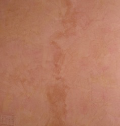
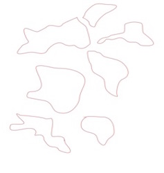
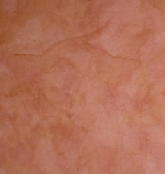
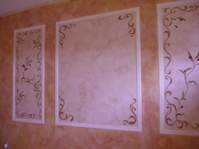

Because Faux Painting Glazes are used to make paint dry slower (open time) in order to be able to work with the paint to achieve different effects, the glaze also makes the paint transparent. In other words, the paint is no longer opaque and will no longer block out the color on the wall but whatever is underneath will show through slightly. If you've ever used finger paint as a child or experimented with water colors, you will remember how the colors you use are like a film and the paint underneath is changed to look like a mixture of what is on top and what is on the bottom. Therefore, if you fail to feather out the glaze in an area where you know you will not be getting to for awhile and allow the glaze to dry, then when you join the next section to that area, you must be extra careful not to overlap the areas too much or you will get lap lines or seams (picture below)
If this happens, there are a few things you can do to tone the lap lines down. Use any method that seems easier and achieves your desired finish.


1) This is the preference of this company - When you come back to add deeper hues (as taught on the Faux Painting Workshop DVD), work off the existing dark area. (left below) Alternate the darker hues of the color to the left and right of the lap line. You can see by the second picture (right below) how you cannot notice the lines anymore. Adding shapes of darker hues (use same colors as before) adds depth and dimension to the wall. With the Triple S Faux Painting Tools, adding the darker hues is so easy to do.
2) If you don't desire to add deeper hues, then you can try to break up the area with a mixture of rubbing alcohol and diluted dishwashing liquid. Dip a cloth or paper towel into the mixture and rub the lap lines very lightly until the paint begins to come off. This method does take time and you must be careful not to take off the base coat. Once the area has been taken off (doesn't come off completely but enough), then with a chip brush dab some color very lightly onto the area and blend into the adjacent areas. Remember that the glaze dries darker than when it is wet, so don't add too much glaze. When it dries, if it's too light, you can always go back and add a bit more.
3) When you come to a section that has already dried, before you add the next section, you can break up the dried glaze by first adding some clear glaze and work it into the dried area where you will be butting up the next section.
4) If you find that you don't like the way the wall looks, remember that you can always paint over the wall with the base coat and start again. Remember that with the Triple S Faux Painting System, you save so much time that you can do this without adding too much time to the job. Keep in mind that faux painting is meant to give movement to the wall by having some areas dark and others lighter and is not meant to have uniformity that only machines can achieve. As long as there is some consistency in the faux finish as far as the over all look, then it's better to leave well enough alone sometimes. Take a look at the finished wall...beautiful, don't you agree? (Fig. D)

For a complete list of all of our articles, click below:
Faux Painting Articles

(This kit includes Basic, Faux Marble, Faux Wood Kit and tools for texturing)
*FREE Priority Shipping and Color Idea E-book